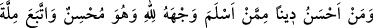
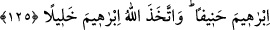

“Kim bir kötülük yaparsa onun cezâsını görür.” Günah işledikten sonra kalp
aynasının üzeri günah pası ile kaplanarak cezâlandırılır. Nitekim Rasûlullah (s.a.v.)
şöyle buyurmuştur: “Kişi bir günah yaptığı zaman kalbinde kara bir nokta oluşur.
Eğer tevbe eder, yaptığından dönerse o nokta silinir.” “ve kendisi için Allah’tan
başka dost da” yâni kendisini günah karanlıklarından tevbe ile tâat ışığına çıkaracak bir
dost ve “yardımcı da bulamaz.” Allah’dan başka kendisine, nefs-i emmâreye karşı
muzaffer kılarak yardım edecek ve nefs-i emmârenin sıfatlarından temizleyecek,
şeytanın şerrini ve hîlesini def edecek bir yardımcı da bulamaz.
“Erkek olsun, kadın olsun” “Erkek” ile kalbe, “kadın” ile de nefse işâret
edilmektedir. “her kim de mü’min olarak” bu işlerde ihlaslı olarak “iyi işler yaparsa,
işte onlar cennete girerler.” Kalp, kendisi için vâcip olan ulvî âleme teveccüh eder,
süflî âlemden yüz çevirir ve Hak’dan gayrısından gözünü kapar, onlara iltifat etmezse
kurbet ve vuslat cennetine girmeye hak kazanmış olur. Nefis de hevâ ve hazlarından
vazgeçip ubûdiyette Allah’ın haklarını edâ eder ve bunda da itmi’nâna (huzura)
kavuşursa yeniden Rabb’ine kavuşmayı ve ruhlar âlemi cennetine girmeyi hak etmiş
olur. Nitekim Allah Teâlâ: “Ey itmi’nâna ermiş nefis (nefs-i mutmainne) sen O’ndan
râzı, O da senden râzı olarak Rabb’ine dön.” (Fecr, 89/27-28) buyurmaktadır.
Allah’ın onlar için takdir ettiği sâlih ameller, derece ve yakınlıklarda “zerre kadar
haksızlığa uğratılmazlar.” Bir kimseye hizmet etmeksizin onun nîmetini temennî eden
kişi, nîmetini temennî etmeksizin hizmetini gören gibi olamaz. Bunlar arasında Allah’a
yakınlık mertebelerinin en yükseği ile aşağıların en aşağısı arasındaki kadar büyük bir
mesafe vardır. Bu kısım, “et-Te’vîlâtü’n-Necmiyye”den alınmıştır.
125- İşlerini en iyi yapan kimse olarak kendini Allah’a veren ve İbrâhim’in,
Allah’ı bir tanıyan dînine tâbi olan kimseden dince daha güzel kim vardır? Allah
İbrâhim’i dost edinmiştir.
“İşlerini en iyi yapan kimse olarak” yâni iyilikleri yaparak ve kötülükleri
terkederek, demektir. Peygamber (a.s.) ihsânı: “İhsân, senin Allah’ı görüyormuş gibi
ibâdet etmendir. Her ne kadar sen O’nu göremiyorsan da, O seni görmektedir.”[167]
buyurarak tefsîr etmiştir. İhsân, îmanın hakîkatidir. “Kendini Allah’a veren” yâni başka
hiç kimseye nefsi hakkında yaratıcılık ve mâliklik, ubûdiyet ve ta’zîm cihetlerinden hiç
bir hak tanımayarak nefsini ve zâtını içtenlikle Allah’a çeviren, demektir.
Bil ki, İslâm dini iki şey üzerine binâ edilmiştir. Bunlar: Îtikad ve ameldir. Allah
Teâlâ “kendini Allah’a veren” buyurarak itikada, “işlerini en iyi yapan kimse”
buyurarak da amele işâret etmiştir. Yâni kişi Rabb’ine itâatte, O’nun yüklediği bütün